documentation version 1.0
First of all, Thank you so much for purchasing this system and for
being my loyal customer.
You are awesome!
You are entitled to get free lifetime updates to this product +
exceptional support from the author directly.
You will need the following software:
Be careful while editing
the code
No support is provided for faulty customization.
Frontend Setup:
$ npm install
Navigate to cashier_front/src/api/index.js and update the baseURL:
import axios from "axios";
var token = localStorage.getItem("token");
export const HTTP = axios.create({
baseURL: `https://your-backend-api-url.com`, // Replace with your own API baseURL
headers: {
Authorization: 'Bearer ' + token,
}
});
Backend Setup:
Ctrl + Shift + B to load the required libraries for
execution.Navigate to cashier_back/POS/appsettings.json and update the connection string:
"ConnectionStrings": {
"WebApiDatabase": "Server=yourlocalhost;Database=xxxxx;MultipleActiveResultSets=true;Trusted_Connection=True;TrustServerCertificate=True;"
},
After completing the configuration and executing the previous steps, you can access the application in your web browser:
http://localhost:8080 (default Vue.js dev server port)https://localhost:5001 or http://localhost:5000 (default ASP.NET Core ports)https://localhost:5001/swaggerImportant Notes:
baseURL with your actual backend API URL.cashier_back/POS folder in Visual Studio 2022.appsettings.json.https://localhost:5001 or http://localhost:5000.After completing all the modifications and running the backend, execute the following command in Visual Studio Code terminal to start the frontend development server:
$ npm run serve
The frontend will start on http://localhost:8080 (or the next available port).
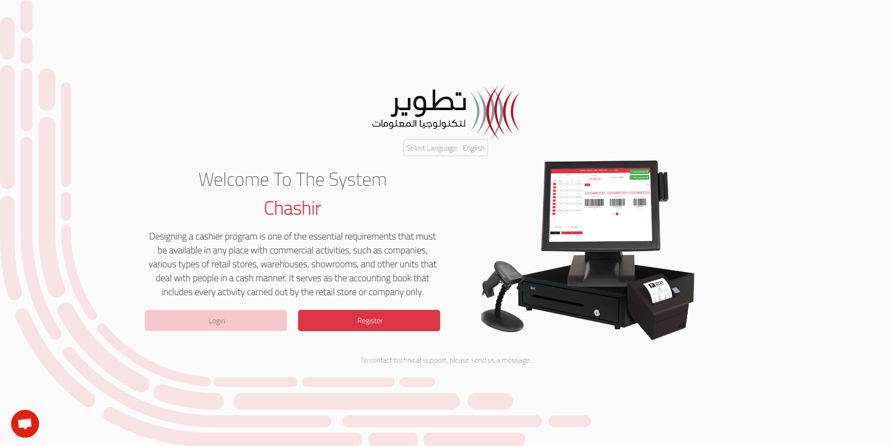
Test Credentials:
Phone Number: 07830200030
Password: 12345678
First Step:
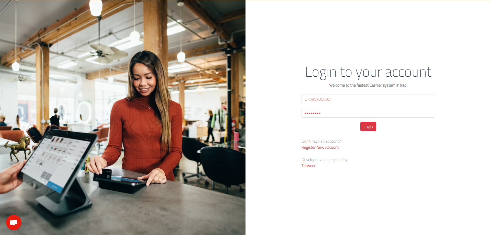
Test credentials for Admin User to add Commercial users:
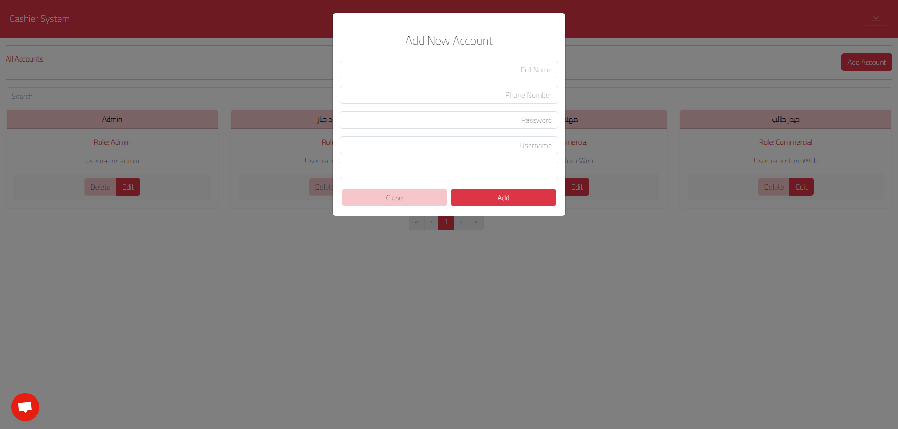
Logout and then check the new Commercial account.
The first page in the Commercial account is the Dashboard.
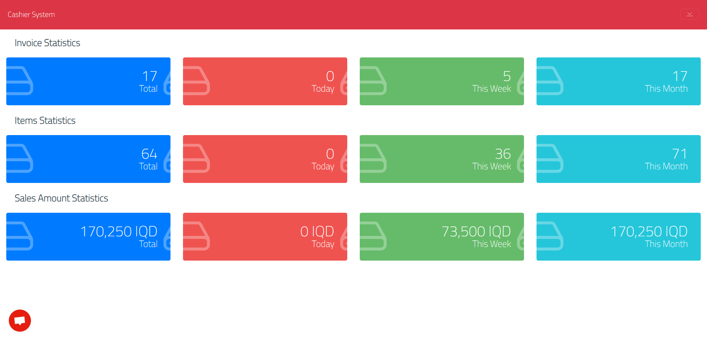
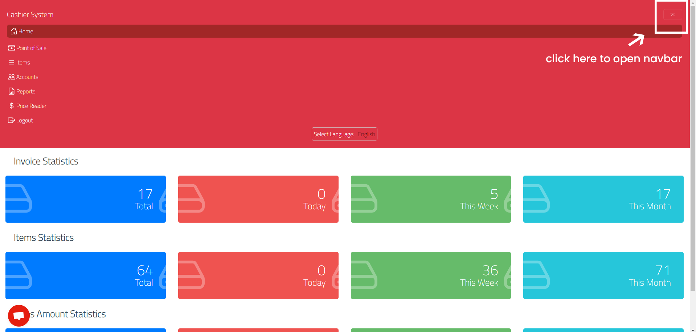
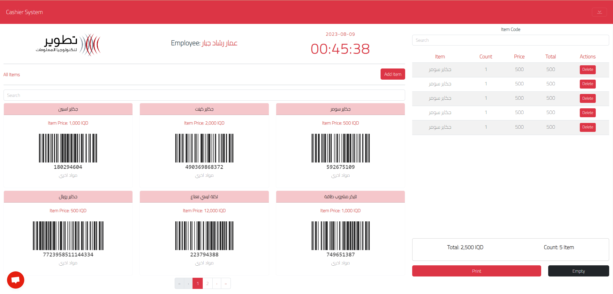
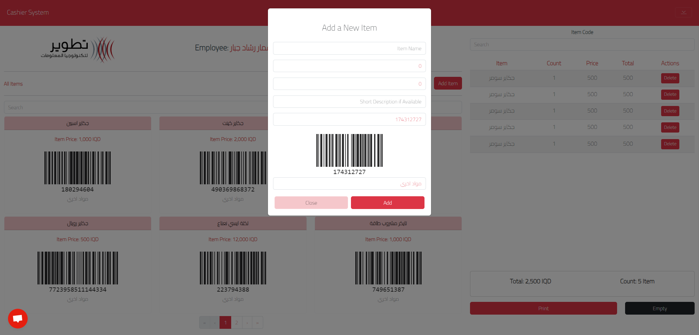
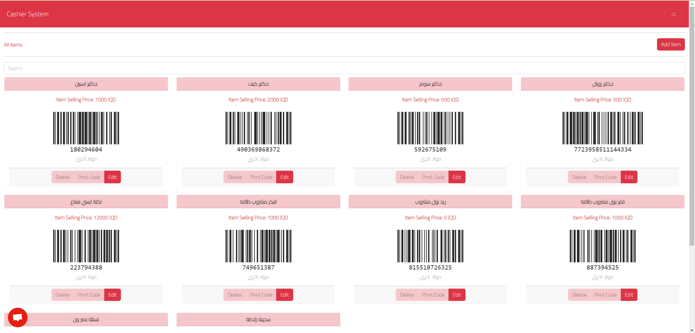
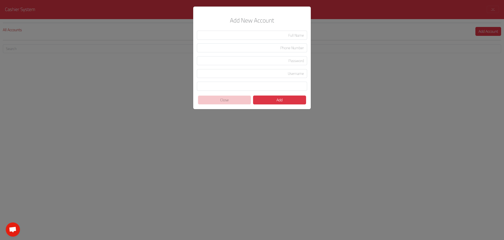
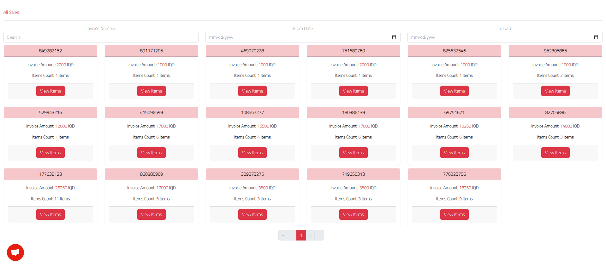
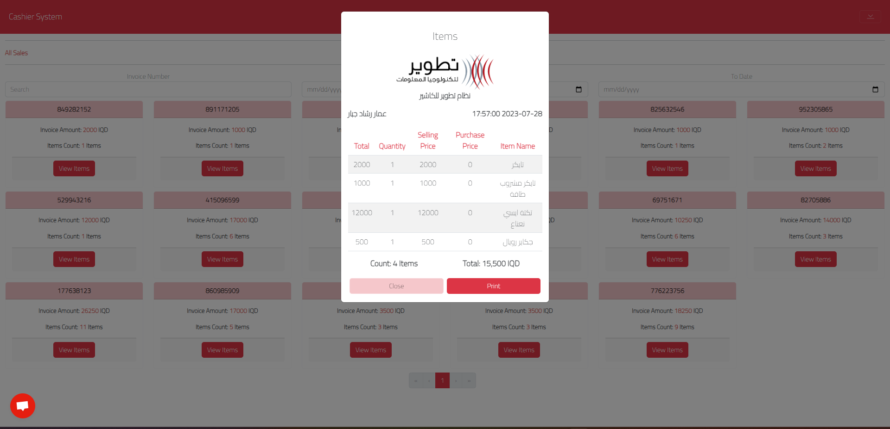
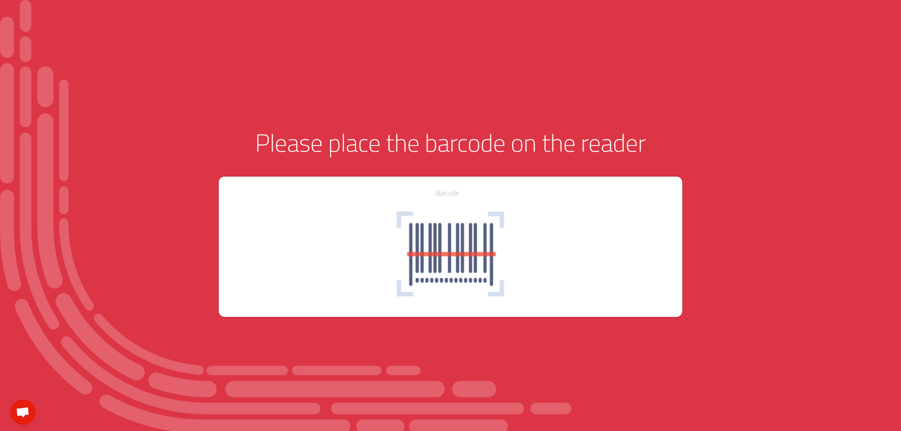
On the same Login page, you can access the system as
Admin, Commercial, Point of Sales, or Price Reader user.